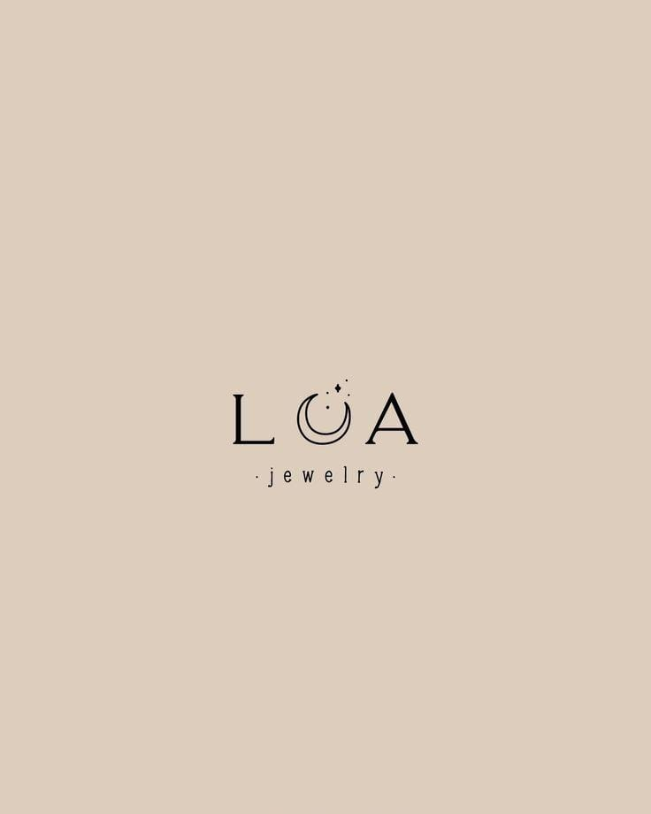

Lua
Hola! Somos Lua, un emprendimiento de accesorios hechos a mano. Podes encontrar pulseras de hilo chino para compartir, regalar o protegerte de la mala energía con las del ojo turco... Tenemos un stock variado y copado para los diferentes estilos y con precios super accesibles... Te esperamos los días 21 y 23 de Junio en nuestro Stand a las 9hs. 🤍🧿🧚🏼♀️🌟